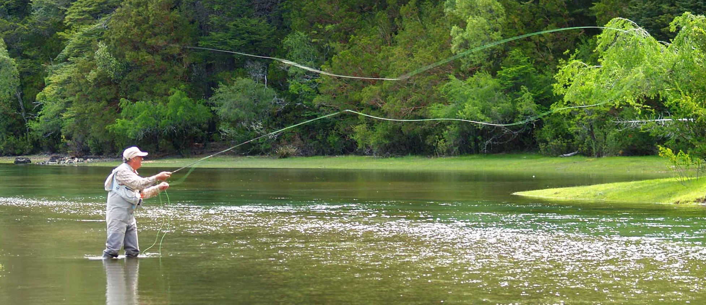
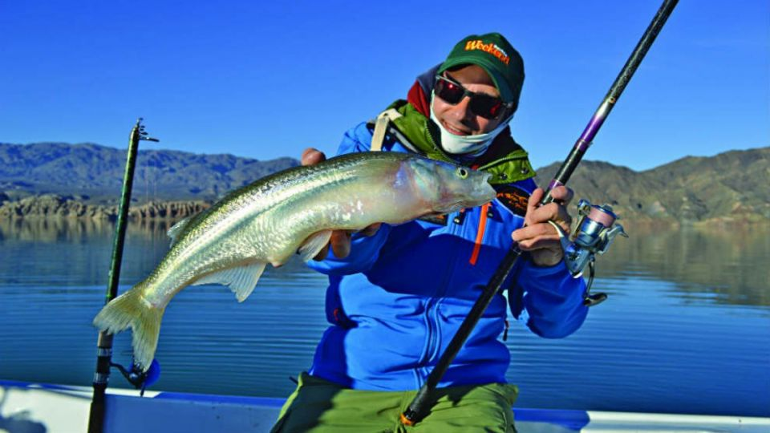
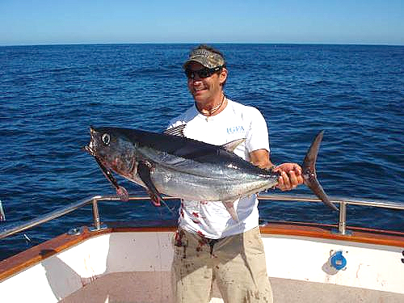
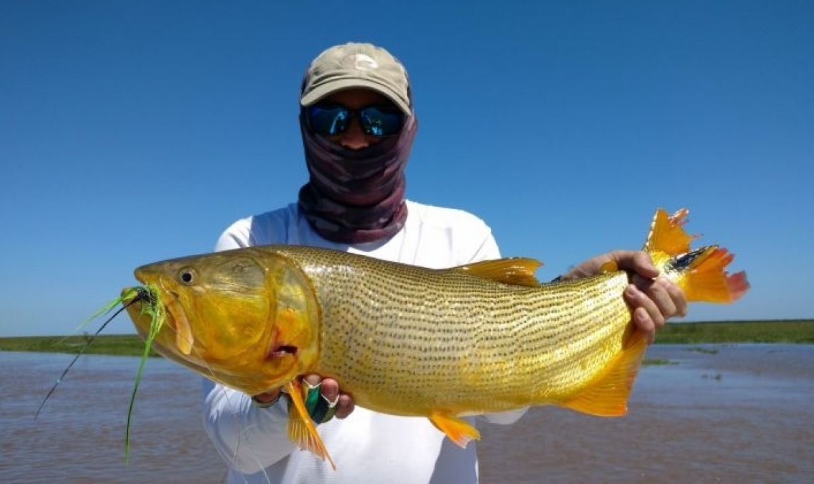
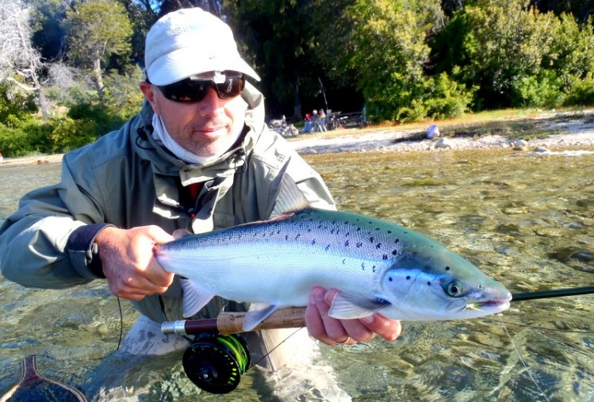

.png)
Portal del Pescador
Existen hombres, entre los que me incluyo, que durante toda su infancia, para su cumpleaños, pedían de regalo una caña de pescar y un reel. E incluso hoy, de grandes, siguen deseando en el fondo de sus corazones el mismo regalo.
Y hay una pregunta que la mayoría de ellos se hizo alguna vez: ¿Qué es la pesca?
La respuesta, que siempre parece "quedarse corta", sigue siendo la misma: un mundo fascinante inventado por los hombres y que sólo entendemos aquellos que formamos parte de él... el resto no entiende nuestra pasión y fanatismo.
Un pescador es un tipo de hombre que todavía sigue maravillado por la sensación de no saber qué es lo que hay debajo del agua, sea un mar, un río, un lago o un pequeño arroyo.
Y a pesar de que pasan los años y cada vez son menos las cosas que nos sorprenden, esta es una sensación que sigue intacta entre los miles de pescadores que todos los fines de semana del año se acercan a cualquier espejo de agua del país para ver qué hay debajo de sus aguas. Un pescador es un romántico que está enamorado de la naturaleza.

Últimas Imágenes
Compartias las imagenes tomas por los amigos de MDQ, en la jornada de pesca realizado el pasodo fin de semana en la arenera del Faro
Cuesta del Viento Provincia de San juan
Pesca de altura en Mar del Plata
Pesca de Dorado en el Alta Parana
Truchas en Traful
